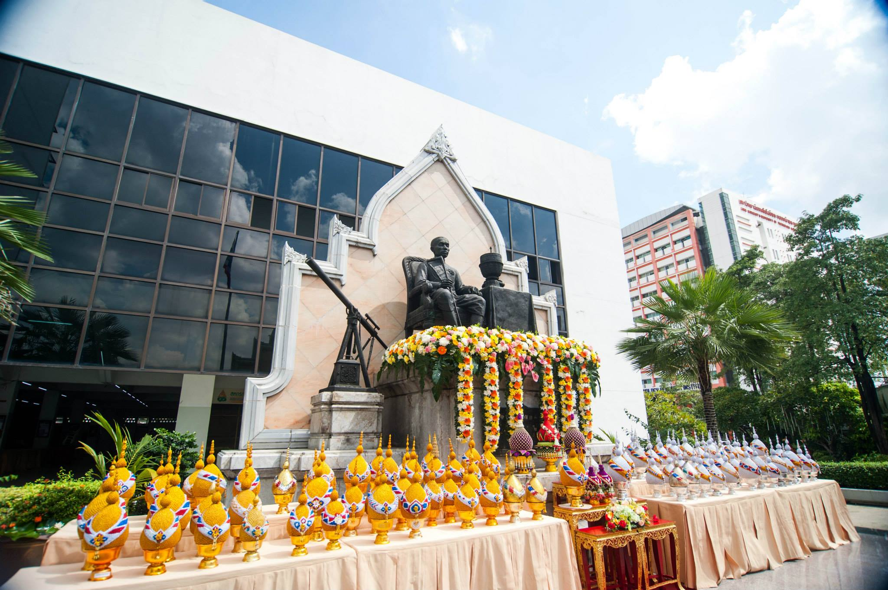

ปณิธาน/วิสัยทัศน์

ปรัชญา
"พัฒนาคน พัฒนาวิทยาศาสตร์และเทคโนโลยี"
ปณิธาน
มุ่งมั่นที่จะพัฒนาทรัพยากรมนุษย์ที่มีความเป็นเลิศทางวิชาการด้านวิทยาศาสตร์และเทคโนโลยี และวิชาการชั้นสูงที่เกี่ยวข้องให้มีความรู้คู่คุณธรรม เพื่อเป็นผู้พัฒนาและสร้างเทคโนโลยีที่เหมาะสม อันก่อให้เกิดการพัฒนาเศรษฐกิจสังคมและสิ่งแวดล้อมที่ยั่งยืน
วิสัยทัศน์
มหาวิทยาลัยชั้นนำด้านวิทยาศาสตร์ เทคโนโลยี และนวัตกรรม เป็นที่ยอมรับในระดับนานาชาติ
พันธกิจ
ผลิตบัณฑิตที่พึงประสงค์ วิจัยและพัฒนา บริการวิชาการแก่สังคม ทำนุบำรุงศิลปะและวัฒนธรรม
อัตลักษณ์
"บัณฑิตที่คิดเป็น ทำเป็น"
เอกลักษณ์
"มจพ. คือมหาวิทยาลัยแห่งการสร้างสรรค์ประดิษฐกรรมสู่นวัตกรรม"